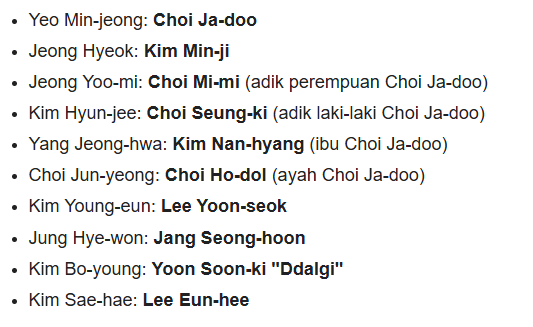
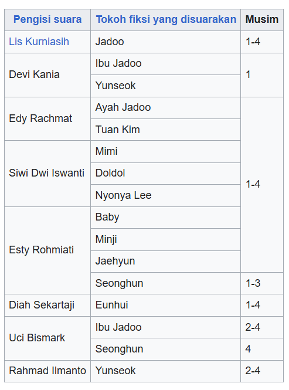

The Story Behind Hello Jadoo
Pernah kepikiran ga, gimana cara bikin kartun kaya Hello Jadoo?
Awalnya, Lee Bin cuma gambar di komik, tapi karena populer banget, akhirnya diangkat jadi animasi oleh Tooniverse Studio.
Menurut informasi yang aku baca, pengisi suara Jadoo sub bahasa Korea itu Yeo Min Jeong, sedangkan pengisi suara Jadoo sub bahasa Indonesia itu Lia Kurniasih.


Setiap episode dibuat lewat proses panjang, dari mulai nulis naskah, gambar storyboard, warna digital, sampai dubbing suara.
Fun fact - warna bajunya Jadoo (merah dan putih) sengaja dipilih karena dianggap cocok sama sifatnya yang energik dan ceria.
Dibalik kartun keren ini, ada banyak kerja keras dan cinta dari tim pembuatnya.
Itulah kenapa Kartun Hello Jadoo bisa terus hidup di hati para penontonnya sampai sekarang !!
❮❮ ❯❯